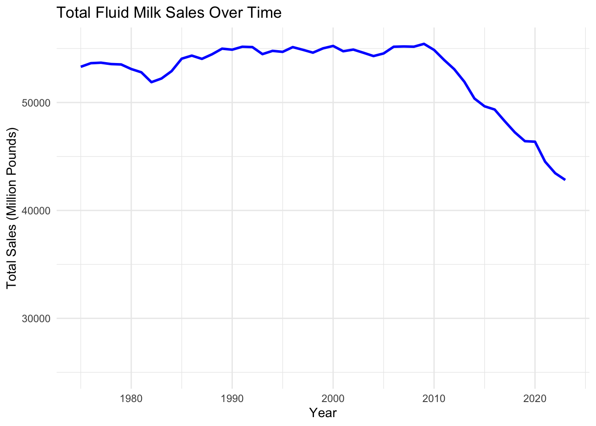
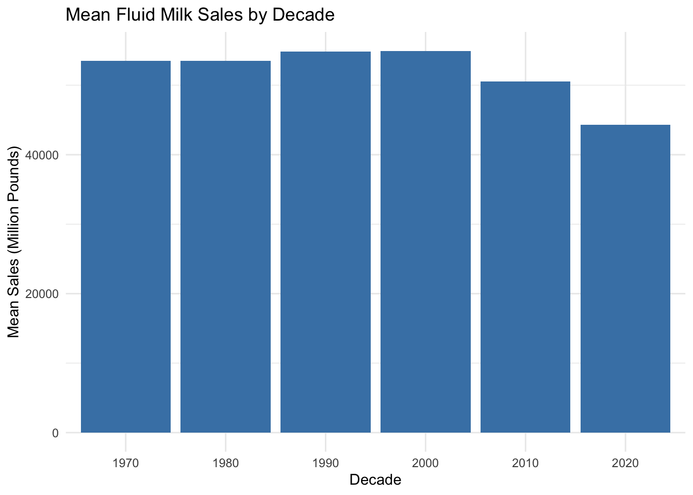

library(readxl)
library(dplyr)
file_path <- "fluidmilk.xlsx"
fluidmilk_data <- read_excel(file_path, sheet = "fluidmilk")## New names:
## • `` -> `...2`
## • `` -> `...3`
## • `` -> `...4`
## • `` -> `...5`
## • `` -> `...6`
## • `` -> `...7`
## • `` -> `...8`
## • `` -> `...9`
## • `` -> `...10`colnames(fluidmilk_data) <- c("Year", "Whole_Milk", "Reduced_Fat_2_%",
"Low_Fat_1_%", "Skim", "Flavored_Whole",
"Flavored_Other", "Buttermilk", "Eggnog", "Total_Sales")
fluidmilk_data <- fluidmilk_data %>%
mutate(Year = as.numeric(Year)) %>%
filter(!is.na(Year))## Warning: There was 1 warning in `mutate()`.
## ℹ In argument: `Year = as.numeric(Year)`.
## Caused by warning:
## ! NAs introduced by coercionfluidmilk_data <- fluidmilk_data %>%
mutate(across(Whole_Milk:Total_Sales, as.numeric))
print(fluidmilk_data)## # A tibble: 49 × 10
## Year Whole_Milk `Reduced_Fat_2_%` `Low_Fat_1_%` Skim Flavored_Whole
## <dbl> <dbl> <dbl> <dbl> <dbl> <dbl>
## 1 1975 36188 8726 2742 2480 1366
## 2 1976 35241 9556 2875 2524 1475
## 3 1977 34036 10423 3003 2617 1446
## 4 1978 33235 11017 3233 2543 1359
## 5 1979 32480 11762 3281 2604 1236
## 6 1980 31253 12435 3483 2636 1075
## 7 1981 30397 13088 3574 2583 843
## 8 1982 29350 13501 3537 2449 710
## 9 1983 28871 14183 3455 2474 749
## 10 1984 28204 15143 3382 2726 907
## # ℹ 39 more rows
## # ℹ 4 more variables: Flavored_Other <dbl>, Buttermilk <dbl>, Eggnog <dbl>,
## # Total_Sales <dbl>key_stats <- fluidmilk_data %>%
summarise(
across(everything(), list(mean = mean, sd = sd, min = min, max = max), na.rm = TRUE)
)
print(key_stats)## # A tibble: 1 × 40
## Year_mean Year_sd Year_min Year_max Whole_Milk_mean Whole_Milk_sd
## <dbl> <dbl> <dbl> <dbl> <dbl> <dbl>
## 1 1999 14.3 1975 2023 20872. 6578.
## # ℹ 34 more variables: Whole_Milk_min <dbl>, Whole_Milk_max <dbl>,
## # `Reduced_Fat_2_%_mean` <dbl>, `Reduced_Fat_2_%_sd` <dbl>,
## # `Reduced_Fat_2_%_min` <dbl>, `Reduced_Fat_2_%_max` <dbl>,
## # `Low_Fat_1_%_mean` <dbl>, `Low_Fat_1_%_sd` <dbl>, `Low_Fat_1_%_min` <dbl>,
## # `Low_Fat_1_%_max` <dbl>, Skim_mean <dbl>, Skim_sd <dbl>, Skim_min <dbl>,
## # Skim_max <dbl>, Flavored_Whole_mean <dbl>, Flavored_Whole_sd <dbl>,
## # Flavored_Whole_min <dbl>, Flavored_Whole_max <dbl>, …library(ggplot2)
library(tidyr)
ggplot(fluidmilk_data, aes(x = Year, y = Total_Sales)) +
geom_line(color = "blue", size = 1) +
scale_y_continuous(limits = c(25000, NA)) +
labs(
title = "Total Fluid Milk Sales Over Time",
x = "Year",
y = "Total Sales (Million Pounds)"
) +
theme_minimal()
a.Growth Period (1975 to mid-1980s): During this period, total fluid milk sales experienced steady growth, likely driven by population growth and increased demand for dairy products.
b.Plateau Phase (mid-1980s to around 2010): Sales remained relatively stable, indicating a period of sus- tained consumption where demand neither increased nor decreased significantly.
c.Decline Period (2010 to 2023): After 2010, a sharp and continuous decline in fluid milk sales is observed, reflecting a significant shift in consumer preferences and market trends.
the data suggests a major transformation in the dairy industry, particularly in the last decade, as consumer behaviors evolve. Understanding the underlying factors driving these trends would be key for stakeholders in the dairy market to adapt to these changes.
library(ggplot2)
library(dplyr)
fluidmilk_data <- fluidmilk_data %>%
mutate(Decade = floor(Year / 10) * 10)
mean_sales_by_decade <- fluidmilk_data %>%
group_by(Decade) %>%
summarise(Mean_Sales = mean(Total_Sales, na.rm = TRUE))
ggplot(mean_sales_by_decade, aes(x = as.factor(Decade), y = Mean_Sales)) +
geom_col(fill = "steelblue") +
labs(
title = "Mean Fluid Milk Sales by Decade",
x = "Decade",
y = "Mean Sales (Million Pounds)"
) +
theme_minimal()
This histogram shows the mean fluid milk sales by decade. Sales remained relatively stable from the 1970s to the 2000s, hovering around similar levels. A noticeable decline begins in the 2010s and continues into the 2020s, reflecting shifting consumer preferences and reduced demand for fluid milk. This trend highlights a major change in the milk market over the past two decades.